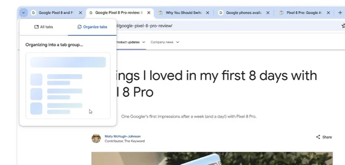

A usa inteligência artificial generativa para ler e compreender o nome de cada guia aberta do navegador. A partir dessa análise, o aplicativo sugere formas em que as abas disponíveis podem ser reunidas.
Para funcionar, a ferramenta precisa que uma combinação de recursos experimentais sejam habilitados no menu chrome://flags
As flags são:
Contudo,a disponibilidade da ferramenta ainda é bem limitada: Somente usuários que residem nos Estados Unidos, devidamente logados no Chrome e com as funções Experimental AI e a sincronização de abas ativados podem usar o recurso.
Com todos os pré-requisitos atendidos, a função entra em ação. Ela pode ser acessada a partir do menu do canto superior esquerdo, dentro da aba "Organizar abas". Ao ser acionada, a IA faz uma varredura sobre todas as páginas abertas e mostra como elas podem ser agrupadas.
A partir das sugestões geradas pela IA, você pode fazer ajustes finos ao clicar no botão ilustrado com um lápis.
A novidade do Chrome também funciona para organizar tópicos específicos . Neste caso, o usuário deve clicar sobre a aba com o botão direito do mouse e selecionar a opção "Organizar abas semelhantes" no menu de contexto.
Por enquanto, a função está disponível somente no Chrome Canary , uma das versões mais instáveis do navegador. Não há previsão para a liberação definitiva do organizador de abas com IA, tampouco se a novidade também chegará ao Android de alguma forma.